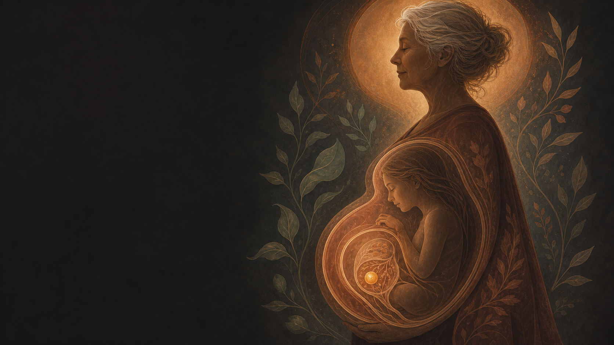
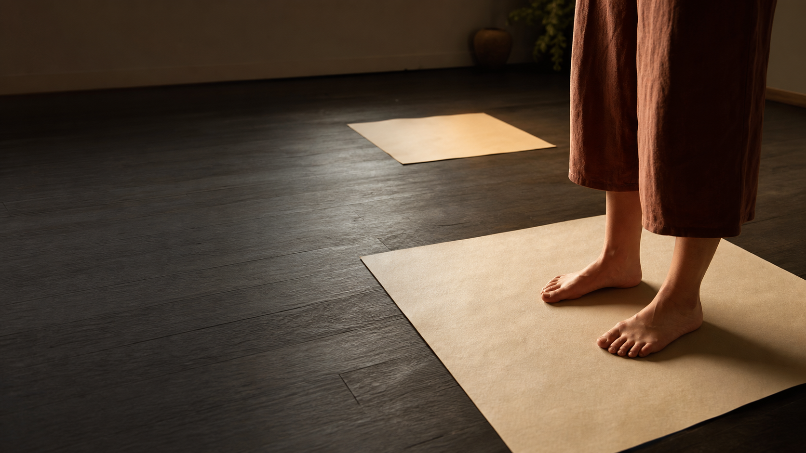

Seis vías de transmisión, y varias operan antes de que haya memoria, lenguaje o vínculo.
S1
El mapa que cargas
S2
La línea paterna
S3 · Hoy
La línea materna
S4
El cuerpo que sobrevive
Método · Antes de buscar
¿La biografía propia alcanza para explicar lo que se quiere explicar?
Si alcanza
El origen está en la vida de la persona. La mayoría de los síntomas se resuelven ahí.
Si queda corta
Hipervigilancia sin evento que la justifique. Un patrón que se repite sin haberlo vivido. Un síntoma que la medicina no ancla. Es el momento de mirar una generación atrás.
Bioenergética TransgeneracionalCriterio de sospecha
Método · Lectura del árbol
Cuatro pasos, en este orden.
1
EdadesPara cada mujer con un evento marcado, la edad que tenía. ¿Se repite la misma edad en generaciones distintas?
A
2
Fechas del calendarioDía y mes, sin importar el año. ¿Se repite una fecha entre personas distintas?
A
Bioenergética TransgeneracionalPasos 1 y 2
Método · Lectura del árbol
3
Oficios y rolesLa que cuidaba, la que sostenía, la que se fue, la que mandaba. ¿El mismo rol en dos generaciones seguidas?
R
4
Tipo de evento por ramaMuerte, secreto, crisis, migración. ¿La misma categoría más de una vez, concentrada en una sola rama?
E
Al terminar: elijan la marca que puedan explicar en una sola frase sin dudar y pónganle un asterisco. Esa es la que se lleva a la segunda hora.
Bioenergética TransgeneracionalPasos 3 y 4
Método · Las dos capas del árbol
Capa 1
Genograma
El árbol con la notación estándar de la terapia familiar: cuadros, círculos, líneas de unión, de divorcio, de corte.
Capa 2
Genosociograma
Lo que ustedes construyeron encima: fechas, edades, oficios, enfermedades, eventos. Lo formalizó Anne Ancelin Schützenberger.
El síndrome de aniversario: las repeticiones de fecha y de edad entre generaciones son dato clínico, y son el más fácil de verificar de todos — está escrito en actas.
Bioenergética TransgeneracionalGenosociograma
Marco · Acceso al inconsciente
Cuatro canales. Ustedes ya usaron tres.
Canal 1
El test muscularAcceso neuromuscular. Se le hace al sistema una proposición y el cuerpo responde.
Canal 2
La localización corporalAcceso somático-sensorial. La pregunta “¿dónde lo sientes?”.
Canal 3
El rastreo de cualidadesAcceso emocional-asociativo. ¿Pesa? ¿Frío o cálido? ¿De qué color?
Bioenergética TransgeneracionalCanales 1 a 3
Marco · Canal 4
Los tres primeros interrogan. Este invierte la dirección: se le pregunta al síntoma, y el síntoma habla.
Y es el canal primario del patrón transgeneracional: una impronta preverbal carece de un instante que se pueda recordar. Lo que hay son fragmentos en el cuerpo. — Se trabaja en la Sesión 4.
La paterna transmite por dos vías. La materna, por seis.
Transmite por más canales, y varios operan antes de que haya memoria, lenguaje o vínculo.
Bioenergética TransgeneracionalSeis vías
Concepto 1 · Las vías
Vía 1
ADN mitocondrialPasa de la madre a todos sus hijos, sin mezclarse. Solo las hijas lo transmiten hacia adelante.
Vía 2
Ovogénesis prenatalLos óvulos se forman antes de nacer.
Vía 3
GestaciónLa barrera placentaria del cortisol.
Vía 4
Co-regulaciónEl sistema nervioso del bebé calibra sus umbrales copiando el de quien lo cuida.
Bioenergética TransgeneracionalCuatro de las seis
Concepto 1 · Vía 1, en detalle
Esa pureza no ocurre por dilución. Se produce.
La proporción
150,000 contra 100
El ovocito lleva más de 150,000 copias de ADN mitocondrial. El espermatozoide, unas cien.
Y aun así
Marcadas para destrucción
Vienen etiquetadas con ubiquitina desde antes de la fecundación. El embrión temprano las engloba y las degrada.
El embrión borra activamente el aporte mitocondrial del padre para dejar la línea materna sin mezcla.
Bioenergética TransgeneracionalEliminación activa
Concepto 1 · Vía 2 · Ovogénesis prenatal
Tres generaciones ocuparon un mismo cuerpo.
Entre las semanas 9 y 22 de vida fetal, el ovario de una niña que aún está en el vientre produce todos los ovocitos que va a tener.
El óvulo del que salió cada uno de ustedes ya existía cuando su madre era un feto dentro de su abuela.

Bioenergética TransgeneracionalTres generaciones
Concepto 1 · Vía 3 · Gestación
La enzima
11β-HSD2La placenta la produce para convertir el cortisol de la madre en una forma inactiva antes de que llegue al feto. Es una barrera.
Bajo estrés
La barrera bajaY la relación entre el estado emocional de la madre y la reactividad al cortisol del bebé aparece mediada por esa enzima.
De ahí sale la frase del programa: se hereda el umbral, no el evento. Un punto de ajuste, fijado antes de nacer.
Bioenergética Transgeneracional11β-HSD2
Concepto 1 · La formulación
Por la línea materna no se hereda el trauma. Se hereda el organelo que convierte la experiencia en fisiología.
En cuidadores bajo estrés crónico, la producción de energía mitocondrial baja sin que cambie la cantidad de mitocondrias. Las mismas, produciendo menos.
Bioenergética TransgeneracionalLa frase de anclaje
Concepto 2 · La lente
El descendiente hereda el umbral, no el evento.
Grupo A · i1 a i7
Defienden al cuerpo
De una amenaza directa. Se leen en la dirección de un movimiento.
Grupo B · i8 a i13
Reorganizan el vínculo
La identidad y la pertenencia. Se leen en el espacio entre las figuras.
Bioenergética TransgeneracionalLa lente
Concepto 2 · Improntas relacionales
i8
Reserva“Siempre me van a dejar.” — Acumular ante la anticipación de la escasez.
i9
Confluencia“Sin el otro no existo.” — Fusión identitaria: no hay yo sin el otro.
i10
Vinculación“Si mejoro, traiciono.” — Fidelidad somática: el síntoma sostiene el vínculo.
Bioenergética Transgeneracionali8 · i9 · i10
Concepto 2 · Improntas relacionales
i11
Superposición“Cargo algo que no es mío.” — Cargar el programa de otro como si fuera propio.
i12
Desarraigo“No pertenezco.” — Emergencia existencial sin territorio.
i13
Encapsulamiento“No me vuelvo a abrir.” — Sellar el centro emocional.
Bioenergética Transgeneracionali11 · i12 · i13
Dinámica 1 · Se lee en la dirección
La lealtad · i10
Se sigue leal a quien se fue, a quien perdió, a quien fue tratado con injusticia. Prosperar se vive como abandonar a quien no pudo.
Aparece donde hubo ruptura de continuidad — una migración, un cambio de clase, la primera que estudió. El éxito abre una brecha con el sistema de origen, y el cuerpo frena la mejoría por lealtad.
Bioenergética TransgeneracionalLealtad
Dinámica 2 · Se lee en la distancia
Tomar el control · i11
La dinámica del “mejor yo que tú”. El niño percibe una emergencia y toma la carga: mejor que yo sufra, mejor que yo me enferme.
Es la impronta de las adopciones no reconocidas, del hermano muerto antes del nacimiento, del secreto que nadie nombró. Y sigue operando en la adultez, extendida a otras relaciones.
Bioenergética TransgeneracionalTomar el control
Dinámica 3 · Se lee en la distancia
La proyección · i9
Los sentimientos que pertenecen a la relación con la madre se depositan en otra: en la pareja, en la hija, en la jefa.
Aparece donde la diferenciación quedó marcada como peligrosa — familias donde separarse era, literalmente, quedarse sin sostén.
Bioenergética TransgeneracionalProyección
El método · Los dos niveles
Nivel 1
Biográfico
Lo que la persona vivió, con gente y lugares que conoce. La realidad se construye. El procedimiento revela relaciones.
Nivel 2
Órdenes de relación
Los enredos, los excluidos, el destino ajeno que sigue operando. La realidad se reconoce tal como se manifiesta. El procedimiento resuelve enredos.
Lo de hoy trabaja el nivel biográfico. El otro tiene su propio procedimiento.
Bioenergética TransgeneracionalLos dos niveles
El método · La paradoja existencial
Usted forma su vida y responde por ella. Y a la vez está sujeto a estructuras relacionales que nadie eligió.
Este método incorpora las constelaciones familiares dentro de sí. Se integraron justo para cubrir lo que la PNL dejaba fuera: las conexiones de relación, mirar a través de los ojos de otro, los órdenes básicos.
En el procedimiento sistémico, la constelación aparece como el último paso.
Bioenergética TransgeneracionalEl encuadre
Eje 1 · Quién aporta la información
Constelación
Los representantes
Reciben solo los hechos externos y reportan lo que sienten en el rol. Pueden moverse por impulso propio, y la imagen se transforma sola.
Aquí
La propia persona
Ella dibuja, ella coloca, ella recorre. Los papeles no aportan nada por su cuenta.
Bioenergética TransgeneracionalEje 1
Eje 2 · Dónde se para quien consulta
Constelación
Mira desde fuera
Sale de la configuración y observa. Los representantes son el espejo de sus patrones de relación.
Aquí
Entra en cada posición
La habita con su cuerpo. Sale al final, al observador.
Un método pone a la persona a observar su sistema encarnado por otros; este la pone a recorrerlo con su propio cuerpo.
Bioenergética TransgeneracionalEje 2
Hora 2 · La línea materna sobre la roseta
El eje Norte–Sur es el horizontal. Tres muñecos: madre, abuela materna y bisabuela materna.
Bioenergética TransgeneracionalLa roseta
Hora 2 · Antes de preguntar
Tres cosas, y en este orden.
1
Hacia dónde va cada unaNorte, Sur, Este, Oeste — o un cuadrante.
2
A qué distancia quedaronQuién quedó pegada a quién. Quién lejos. Quién fuera del grupo.
3
Hacia dónde miranSi la mirada va donde caminan, o hacia otro lado.
Bioenergética TransgeneracionalQué se mira
Hora 2 · Preguntas por dirección
Norte
Migrante¿Hay mujeres en esta línea que se fueron? ¿Migración o exilio? ¿Alguna tuvo que salir de su casa muy joven?
Sur
Sufrimiento¿Qué duelo no se lloró en esta línea? ¿Qué muerte, qué pérdida, quedó sin hablarse? ¿Sostienen algo de ese peso?
Bioenergética TransgeneracionalNorte y Sur
Hora 2 · Preguntas por dirección
Oeste
Deber¿Quién sostuvo a todos? ¿Qué carga se asumió sin haberla elegido? ¿Hubo una que crió a los hijos de otra?
Este
Placer¿Había permiso para disfrutar entre las mujeres de su familia? ¿O el placer se pagaba con culpa?
Bioenergética TransgeneracionalOeste y Este
Hora 2 · Lo que dice la distancia
i9
Dos muy pegadasCasi tocándose. Donde falta distancia, cuesta saber dónde termina una y empieza la otra.
i11
Una adelante de otraO encima de su camino. La posición del “mejor yo que tú” — alguien tomando una carga que le tocaba a otra.
Bioenergética TransgeneracionalFusión y carga
Hora 2 · Lo que dice la distancia
Fuera
Una que quedó apartada¿Quién es? ¿Y qué se sabe de ella? Suele corresponder a alguien de quien en la familia se guarda silencio.
Mirada
Camina a un lado y mira a otroComo quien va a un lugar con el pensamiento puesto en otro.
Bioenergética TransgeneracionalExclusión y mirada
Hora 2 · El cruce con el árbol
La caída abre la puerta. El árbol la verifica.
Saquen la marca del asterisco. Si la hoja y el árbol apuntan al mismo lado, la lectura es sólida. Si difieren, hay una tensión que vale la pena mirar.
Bioenergética TransgeneracionalEl cruce
La técnica · El procedimiento completo
Seis pasos para acceder al campo.
1
Dibujar con la mano no dominante
2
Colocar el papel en el piso
3
Pararse encima, los dos pies
4
Preguntar desde ahí, y escuchar al cuerpo
5
Segunda hoja aparte: el observador
6
Llevarse el recurso
Bioenergética TransgeneracionalEl procedimiento
La técnica · Movimiento 1
El dibujo
Con la mano con la que no escriben.
Elijan una de las tres mujeres — la que menos entiendan. Dibújenla en una hoja en blanco.
La mano no dominante accede al hemisferio contrario y produce un trazo mucho menos filtrado por el control consciente. Por ahí es por donde el campo se expresa. No tiene que parecerse a nada.
Bioenergética TransgeneracionalMano no dominante

La técnica · Movimiento 2
El anclaje
La hoja al piso. Y ustedes, de pie encima.
En el lugar que les pida el cuerpo, no en el centro por orden. Los dos pies sobre el papel, en el lugar de ella.
Ahí es donde se accede a la información. El papel en el piso es un punto de acceso al campo del sistema.
Bioenergética TransgeneracionalAnclaje espacial
La técnica · Desde su lugar
Las preguntas, en silencio
¿Cómo estoy parada aquí?¿Cómo respiro?¿Cómo se siente estar en esta familia?¿Me siento más grande, más pequeña o del mismo tamaño que las demás?¿Quién es la persona más importante desde aquí?
Lo que importa es el cuerpo: qué se tensa, qué se suelta, cómo cambia la respiración. Eso es la información.
Bioenergética TransgeneracionalExplorar la posición
La técnica · La pregunta que lo sostiene todo
¿De qué manera esta mujer tuvo la intención de algo bueno para la familia?
Mirando a través de sus ojos, no desde los suyos. Lo que hizo pudo salir mal, pudo costarle a otros, pudo repetirse por generaciones. La pregunta es otra: hacia dónde apuntaba.
Bioenergética TransgeneracionalIntención positiva
Por qué esa pregunta · El amor primario
Es el amor, y no el daño, lo que produce el enredo.
El amor primario es el impulso innato de un niño de pertenecer y amar a su familia, incondicionalmente. De ahí sale el enredo sistémico: un miembro asumiendo cargas emocionales de otro.
Es lo mismo que llevamos toda la sesión nombrando como i11, Superposición — cargo algo que no es mío. Dos marcos, el mismo fenómeno.
Bioenergética TransgeneracionalAmor primario
La técnica · Movimiento 3
El observador
La segunda hoja, aparte. Párense ahí.
Desde el observador se mira el conjunto completo, y se mira sin juicio. Si desde ahí todavía los jala algo, aléjense un paso más.
¿Cambió algo en mi percepción?¿Qué aprendí?
Bioenergética TransgeneracionalMetaposición
La técnica · Movimiento 4
El cierre
De todo esto, ¿qué se llevan?
Una frase, una imagen, una sensación en el cuerpo. Guárdenla donde la sientan.
Este método pide que nadie se vaya con las manos vacías. Guarden también su dibujo — es material de la última sesión.
Bioenergética TransgeneracionalLlevarse el recurso
Hora 2 · Las dos líneas sobre la misma roseta
Las mujeres de un lado, los hombres del otro.
1
¿Al mismo lado, o a lados distintos?Al mismo lugar hay convergencia, y queda poco desde dónde mirarlo. A lados opuestos hay tensión, y quien está en medio la sostiene.
2
¿Se miran, o se dan la espalda?
3
Si ustedes se pusieran ahí, ¿dónde quedarían?¿Del lado de las mujeres? ¿De los hombres? ¿En medio? ¿O en un lugar que ninguno ocupa? — Tómenle foto.
Bioenergética TransgeneracionalLas dos líneas
El marco que lo explica
Lo que acaban de abrir se llama campo mórfico.
Sheldrake, 1981: campos de información que organizan la forma, el comportamiento y la memoria de los sistemas vivos. Materiales no son, ni energéticos en el sentido físico clásico — son campos de hábitos.
Y por eso la figura vuelve a caer igual: porque se está trabajando dentro del campo de un tema. Por eso el tema tiene que estar definido — y el de hoy es la línea de mujeres.
Bioenergética TransgeneracionalCampo mórfico
Por qué el anclaje da acceso
1
El anclaje espacialLas posiciones físicas que la persona ocupa en el piso son puntos de acceso al campo del sistema.
2
La resonanciaAl colocarse en la posición de su madre, o de su yo infantil, entra en resonancia con una parte del campo familiar que sigue activa.
3
Lo que emergeDesde esa resonancia sale la información: las emociones sin procesar, las intenciones ocultas, los mensajes que nunca se dijeron.
Y por eso funciona sin recuerdo: el campo transmite la experiencia directamente. No hace falta que la persona recuerde el evento.
Bioenergética TransgeneracionalResonancia mórfica
La segunda puerta
NIG y Campos Mórficos
Hoy probaron
El mecanismo, con una figura
Mano no dominante, papel al piso, el cuerpo encima, y el observador.
El método completo
La familia entera
Una hoja por miembro, las distancias y ángulos entre todas, el recorrido de posición en posición, y la Re-Impronta Sistémica para los enredos y los excluidos.
Bioenergética TransgeneracionalEl curso
Su beca incluye
Elijan una de las dos.
Opción A
Terapia con Muñecos
Playmobil Pro y el marco de Los Caminos de la Vida. Leer la dirección de una vida sobre la hoja.
Opción B
NIG y Campos Mórficos
Leer el campo familiar completo, con anclajes en el piso y posiciones perceptuales.
Una sesión de práctica presencial en el Instituto, con supervisión y cupo limitado. Piénsenlo esta semana.
Bioenergética TransgeneracionalSesión de práctica
INSTITUTOCENTROBIOENERGETICA
Lo que ensayamos hoy
Leer el árbol con método. Y observar antes de interpretar.
La próxima semana: ahora que el campo está abierto, se le pregunta al cuerpo. Ahí vuelve el test, con contexto.